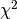

Basic functions that are related to statistics.
| requires: | NumPy |
|---|---|
| author: | Sami-Matias Niemi |
| contact: | sniemi@unc.edu |
| version: | 0.1 |
Functions
| chiSquare(model, obs) | Simple  calculation. |
| stdevclipping(array[, lowcut, highcut, ...]) | Sigmaclipped standard deviation, mean, and median. |